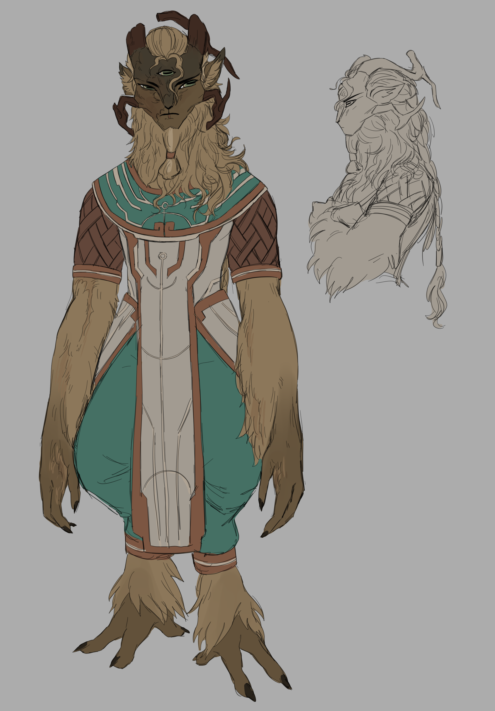

Robur's Vessel
fireplace

Name: Hedera
Age: Late 40s - Early 50s
Gender: Male
Pronouns: He/Him
JOB: Lead Machinist
HGT: 6'2"
WGT: Slightly Above Average
EYE: Green
FUR: Brown
MANE: Light Brown
Character Information
Name: Hedera
Age: Late 40s - Early 50s
Pronouns: He/Him
Gender: Male
Likes & Dislikes
Likes
Dislikes
- Handling machinery
- Tending to his husband's (Robur's) mane
- His husband :D
- Honest people
- Having his mane nice and clean
- Being stared at
- His right eye
- Know-it-alls who think they can order him around
- Fire
Appearance

Hedera is a large Nomai with cedar-colored fur and a tan, wavy mane which he keeps tied back in a practical, long braid. He has green-grey slanted eyes, one of which was left unable to open all the way by the fire that burned half of his face. Even if years have passed, the burn is still visible through patches of barely regrown fur. His upper right horn is damaged and his right ear torn because of the same injury.
He wears clothes without many drapes that allow him to work with machines, mainly off-white and turquoise in color with copper accents. Holding his beard is a copper clasp that he rarely takes off.
He wears clothes without many drapes that allow him to work with machines, mainly off-white and turquoise in color with copper accents. Holding his beard is a copper clasp that he rarely takes off.
Personality
Skills
Hedera is a gruff, no-nonsense kind of guy, which makes it hard to immediately bond with him. One could say that he has very little patience to deal with those who prod him too much or annoy him. It's tough to see behind his exterior, and often he'll prefer work other than socializing beyond what's considered the bare minimum. He only truly enjoys the company of his husband and of lifelong friends, to whom he is devoted almost to a fault. He doesn't show it often, but he cares deeply for the people around him. If asked, though, he'll deny and tell them to get lost. Hedera will show his tenderness only when he deems it necessary.
- He is an excellent mechanic, and very devoted to his job
- He's pretty good at tending to manes and fur